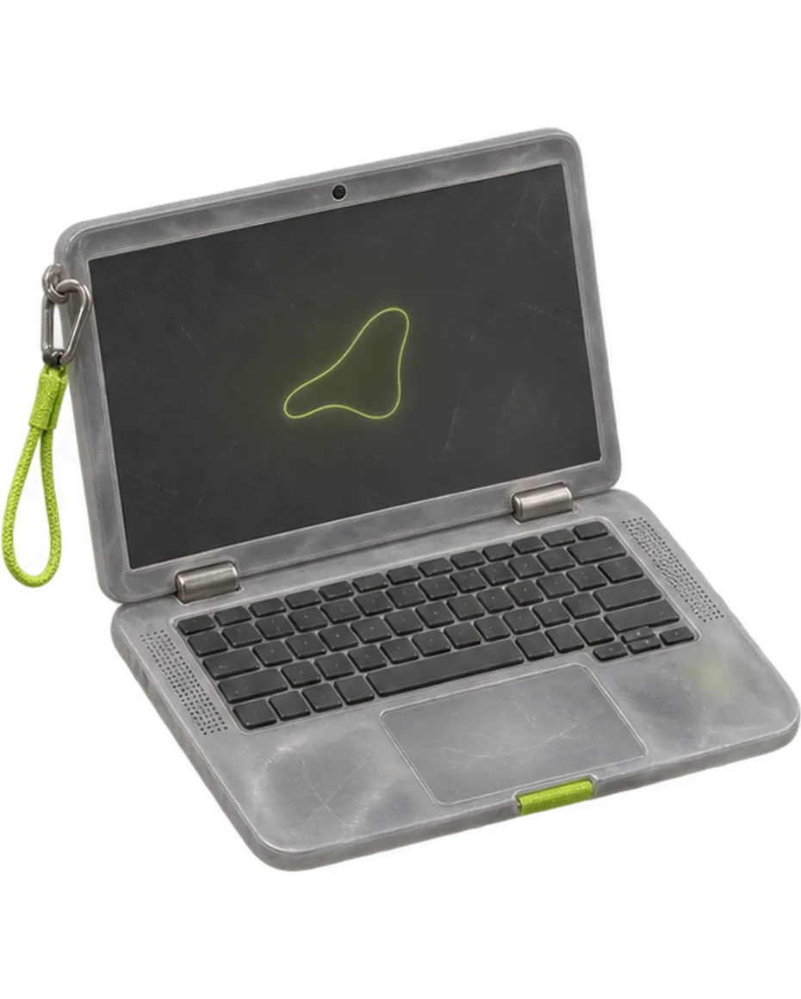

邓宇轩 · 个人作品集AIGC 内容创作 / 视频制作 / 视觉设计

把灵感、设计与影像放进电脑。
三个入口，认识我的不同侧面。
拖入三个图标，展开作品集。
ABOUT ME / 工作履历
邓宇轩 · AIGC 内容创作

北京众智汇融科技有限公司
后期剪辑专注AIGC短视频、AI短剧商业化创作，参与40+漫剧短剧及大量TVC广告、电商带货等项目，主导AI短视频带货资产确立、分镜生成、视频产出、成片优化、后期剪辑全流程制作；搭建AI脚本Prompt库、内容生产SOP，解决传统内容产能低、成本高、创意迭代慢的问题，通过AI标准化量产提升内容产出效率与爆款率，沉淀可复用的AIGC内容资产。
MOTION / 视频类
让故事动起来。
广告 / 内容创作 / 游戏 · 18 个项目DESIGN / 设计类
静态，也有表达。
品牌 / 电商 / IP / UI / 字体 / 专辑封面下一件作品，正在发生。